Sparse Networks with Overlapping Communities (SNetOC) package: demo_simulations
This Matlab script performs posterior inference on a (sparse) simulated graph with overlapping communities.
For downloading the package and information on installation, visit the SNetOC webpage.
Reference:
- A. Todeschini, X. Miscouridou and F. Caron (2017) Exchangeable Random Measures for Sparse and Modular Graphs with Overlapping Communities. arXiv:1602.02114.
Authors:
- A. Todeschini, Inria
- X. Miscouridou, University of Oxford
- F. Caron, University of Oxford
Tested on Matlab R2016a. Requires the Statistics toolbox.
Last Modified: 10/10/2017
Contents
General settings
close all clearvars tstart = clock; % Starting time istest = true; % enable testing mode: quick run with small nb of iterations root = '.'; if istest outpath = fullfile(root, 'results', 'CGGP_simulations', 'test'); else outpath = fullfile(root, 'results', 'CGGP_simulations', date); end if ~isdir(outpath) mkdir(outpath) end % Add path addpath ./GGP/ ./CGGP/ ./utils/ set(0, 'DefaultAxesFontSize', 14) % Set the seed rng default
Sample a CGGP graph
titlenetwork = 'Simulated simple graph'; name = 'simugraph'; labels = {'Nodes', 'Nodes'}; % Set parameters of the CGGP graph p = 2; alpha_true = 200; sigma_true = 0.2; tau_true = 1; observe_all_true = false; Fdist_true.name = 'gamma'; Fdist_true.param.b = 1/p; Fdist_true.param.a = 0.2; obj = graphmodel('CGGP', p, alpha_true, sigma_true, tau_true, Fdist_true); % Sample a CGGP graph [G, w_true, w_rem_true] = graphrnd(obj, 1e-6); nnodes = size(G, 1); nedges = nnz(G); fprintf('CGGP graph with %d nodes and %d edges sampled\n', size(G, 1), nnz(triu(G))); % shuffle nodes indperm = randperm(size(w_true,1)); w_true = w_true(indperm,:); G = G(indperm, indperm); figure('name', 'adjacency matrix') spy(G) xlabel('Nodes') ylabel('Nodes') title('Adjacency Matrix') figure('name', 'Empirical degree distribution') hdeg = plot_degree(G); set(hdeg, 'markersize', 10, 'marker', 'o','markeredgecolor', 'none', 'markerfacecolor', [1, .75, .75]);
CGGP graph with 1079 nodes and 5679 edges sampled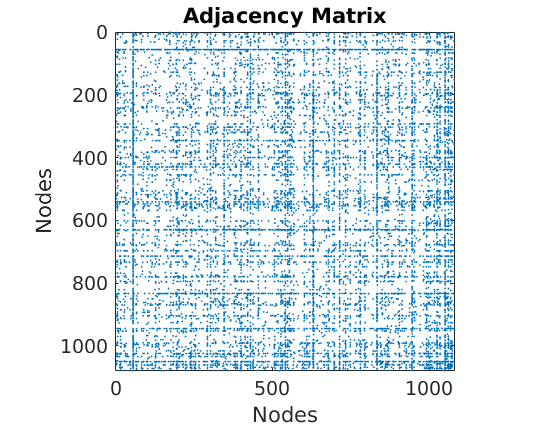 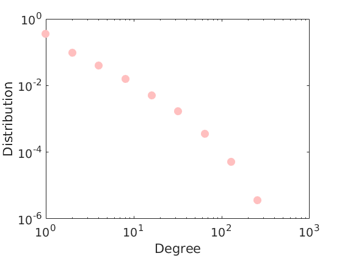
Prior distribution
p = 2;
objprior = graphmodel('CGGP', p);
Posterior inference
% Parameters of the MCMC algorithm if istest niterinit = 100; niter = 20000; nsamples = 100; % Nb of Monte Carlo samples to return else niterinit = 10000; niter = 200000; nsamples = 500; end nburn = floor(3*niter/4); nchains = 3; thin = ceil((niter-nburn)/nsamples); verbose = true; % Create the graphMCMC object objmcmc = graphmcmc(objprior, niter, 0, thin, nchains); % Note: nburn is set to zero here in order to store samples in the transient regime of the MCMC % Run initialisation init = graphinit(objmcmc, G, niterinit);
----------------------------------- Start initialisation of the MCMC algorithm for CGGP ----------------------------------- End initialisation -----------------------------------
% Run MCMC sampler
objmcmc = graphmcmcsamples(objmcmc, G, verbose, init);
----------------------------------- Start MCMC for CGGP graphs Nb of nodes: 1079 - Nb of edges: 5679 (0 missing) Nb of chains: 3 - Nb of iterations: 20000 Nb of parallel workers: 1 Estimated computation time: 0 hour(s) 4 minute(s) Estimated end of computation: 08-Nov-2017 18:10:00 ----------------------------------- Markov chain 1/3 ----------------------------------- i=2000 alp=136.49 sig=0.239 tau=1.10 a=0.37 0.42 b=0.76 0.93 w*=1.25 1.49 b2=0.83 1.02 alp2=139.77 rhmc=0.83 rhyp=0.56 eps=0.027 rwsd=0.02 i=4000 alp=134.96 sig=0.263 tau=1.05 a=0.25 0.37 b=0.40 0.67 w*=1.54 1.62 b2=0.42 0.70 alp2=136.81 rhmc=0.78 rhyp=0.59 eps=0.027 rwsd=0.02 i=6000 alp=145.91 sig=0.222 tau=1.24 a=0.22 0.27 b=0.34 0.43 w*=1.16 1.40 b2=0.42 0.54 alp2=153.11 rhmc=0.78 rhyp=0.60 eps=0.027 rwsd=0.02 i=8000 alp=150.12 sig=0.243 tau=1.09 a=0.24 0.27 b=0.36 0.58 w*=1.40 1.41 b2=0.39 0.63 alp2=153.14 rhmc=0.76 rhyp=0.61 eps=0.027 rwsd=0.02 i=10000 alp=200.69 sig=0.181 tau=1.92 a=0.24 0.28 b=0.44 0.51 w*=1.48 1.45 b2=0.84 0.99 alp2=225.94 rhmc=0.77 rhyp=0.59 eps=0.027 rwsd=0.02 i=12000 alp=211.24 sig=0.152 tau=2.21 a=0.22 0.26 b=0.31 0.41 w*=1.48 1.51 b2=0.69 0.91 alp2=238.27 rhmc=0.76 rhyp=0.60 eps=0.027 rwsd=0.02 i=14000 alp=208.43 sig=0.166 tau=2.16 a=0.25 0.25 b=0.44 0.45 w*=1.42 1.50 b2=0.96 0.96 alp2=236.93 rhmc=0.76 rhyp=0.61 eps=0.027 rwsd=0.02 i=16000 alp=225.19 sig=0.141 tau=2.19 a=0.23 0.23 b=0.48 0.49 w*=1.14 1.37 b2=1.06 1.07 alp2=251.49 rhmc=0.78 rhyp=0.61 eps=0.027 rwsd=0.02 i=18000 alp=224.65 sig=0.148 tau=2.02 a=0.21 0.22 b=0.47 0.53 w*=1.40 1.32 b2=0.95 1.07 alp2=249.24 rhmc=0.78 rhyp=0.62 eps=0.027 rwsd=0.02 i=20000 alp=214.54 sig=0.179 tau=1.67 a=0.24 0.23 b=0.51 0.52 w*=1.55 1.50 b2=0.86 0.87 alp2=235.14 rhmc=0.79 rhyp=0.62 eps=0.027 rwsd=0.02 ----------------------------------- Markov chain 2/3 ----------------------------------- i=2000 alp=62.14 sig=0.335 tau=1.34 a=0.44 0.33 b=0.31 0.16 w*=1.51 1.81 b2=0.41 0.22 alp2=68.62 rhmc=0.83 rhyp=0.53 eps=0.027 rwsd=0.02 i=4000 alp=81.95 sig=0.286 tau=1.29 a=0.36 0.29 b=0.25 0.17 w*=1.41 1.46 b2=0.32 0.22 alp2=88.11 rhmc=0.78 rhyp=0.58 eps=0.027 rwsd=0.02 i=6000 alp=74.46 sig=0.298 tau=1.45 a=0.31 0.34 b=0.20 0.20 w*=1.44 1.42 b2=0.29 0.30 alp2=83.15 rhmc=0.77 rhyp=0.58 eps=0.027 rwsd=0.02 i=8000 alp=85.08 sig=0.295 tau=1.18 a=0.24 0.31 b=0.14 0.23 w*=1.47 1.54 b2=0.17 0.28 alp2=89.38 rhmc=0.79 rhyp=0.59 eps=0.027 rwsd=0.02 i=10000 alp=104.65 sig=0.257 tau=1.60 a=0.26 0.26 b=0.18 0.20 w*=1.52 1.29 b2=0.30 0.32 alp2=118.14 rhmc=0.78 rhyp=0.60 eps=0.027 rwsd=0.02 i=12000 alp=141.80 sig=0.224 tau=1.65 a=0.28 0.29 b=0.42 0.37 w*=1.49 1.52 b2=0.70 0.61 alp2=158.72 rhmc=0.78 rhyp=0.59 eps=0.027 rwsd=0.02 i=14000 alp=171.99 sig=0.203 tau=2.45 a=0.25 0.24 b=0.33 0.32 w*=1.67 1.41 b2=0.81 0.79 alp2=206.30 rhmc=0.78 rhyp=0.60 eps=0.027 rwsd=0.02 i=16000 alp=170.11 sig=0.186 tau=2.23 a=0.29 0.21 b=0.37 0.26 w*=1.51 1.27 b2=0.83 0.57 alp2=197.57 rhmc=0.77 rhyp=0.60 eps=0.027 rwsd=0.02 i=18000 alp=169.84 sig=0.179 tau=2.65 a=0.25 0.23 b=0.30 0.26 w*=1.59 1.27 b2=0.80 0.68 alp2=202.25 rhmc=0.77 rhyp=0.61 eps=0.027 rwsd=0.02 i=20000 alp=224.32 sig=0.114 tau=3.00 a=0.24 0.26 b=0.30 0.31 w*=1.24 1.20 b2=0.89 0.93 alp2=254.32 rhmc=0.77 rhyp=0.62 eps=0.027 rwsd=0.02 ----------------------------------- Markov chain 3/3 ----------------------------------- i=2000 alp=167.41 sig=0.215 tau=1.06 a=0.34 0.32 b=0.77 0.73 w*=1.57 1.62 b2=0.82 0.77 alp2=169.65 rhmc=0.80 rhyp=0.55 eps=0.027 rwsd=0.02 i=4000 alp=185.02 sig=0.166 tau=0.99 a=0.30 0.27 b=0.70 0.70 w*=1.15 1.38 b2=0.69 0.69 alp2=184.65 rhmc=0.79 rhyp=0.61 eps=0.027 rwsd=0.02 i=6000 alp=146.99 sig=0.242 tau=0.83 a=0.33 0.26 b=0.74 0.51 w*=1.37 1.32 b2=0.61 0.42 alp2=140.45 rhmc=0.81 rhyp=0.59 eps=0.027 rwsd=0.02 i=8000 alp=122.27 sig=0.284 tau=0.73 a=0.28 0.24 b=0.56 0.49 w*=1.41 1.39 b2=0.41 0.36 alp2=111.94 rhmc=0.79 rhyp=0.59 eps=0.027 rwsd=0.02 i=10000 alp=152.58 sig=0.250 tau=0.75 a=0.24 0.24 b=0.59 0.65 w*=1.51 1.58 b2=0.44 0.49 alp2=141.79 rhmc=0.78 rhyp=0.60 eps=0.027 rwsd=0.02 i=12000 alp=192.84 sig=0.190 tau=0.81 a=0.24 0.26 b=0.74 0.94 w*=1.55 1.35 b2=0.60 0.76 alp2=185.31 rhmc=0.76 rhyp=0.61 eps=0.027 rwsd=0.02 i=14000 alp=170.14 sig=0.208 tau=0.77 a=0.24 0.24 b=0.55 0.57 w*=1.35 1.41 b2=0.42 0.44 alp2=161.07 rhmc=0.78 rhyp=0.60 eps=0.027 rwsd=0.02 i=16000 alp=231.46 sig=0.158 tau=0.86 a=0.22 0.23 b=0.68 0.71 w*=1.39 1.64 b2=0.58 0.61 alp2=226.16 rhmc=0.78 rhyp=0.61 eps=0.027 rwsd=0.02 i=18000 alp=188.75 sig=0.203 tau=0.73 a=0.25 0.26 b=0.79 0.85 w*=1.47 1.35 b2=0.58 0.62 alp2=177.04 rhmc=0.78 rhyp=0.60 eps=0.027 rwsd=0.02 i=20000 alp=193.44 sig=0.183 tau=0.68 a=0.25 0.26 b=0.81 0.93 w*=1.22 1.39 b2=0.56 0.64 alp2=180.46 rhmc=0.81 rhyp=0.61 eps=0.027 rwsd=0.02 ----------------------------------- End MCMC Computation time: 0 hour(s) 4 minute(s) -----------------------------------
% Print summary in text file print_summary(['summary_' num2str(p) 'f.txt'], titlenetwork, G, niter, nburn, nchains, thin, p, outpath, tstart) % discard burnin to compute estimates objmcmc_all = objmcmc; objmcmc.samples = discard(objmcmc_all.samples, floor(nburn/objmcmc_all.settings.thin)); objmcmc.settings.nburn = nburn; % Get estimates and cost [estimates, C_st] = graphest(objmcmc); % Save workspace save(fullfile(outpath, ['workspace_' num2str(p) 'f.mat']))
----------------------------------- Start parameters estimation for CGGP graphs: 300 samples Estimated end of computation: 08-Nov-2017 18:10:37 (0.0 hours) |---------------------------------| |*********************************| End parameters estimation for CGGP graphs Computation time: 0.0 hours -----------------------------------
Plots
prefix = sprintf('%s_%df_', name, p); suffix = ''; % Plot cost plot_cost(C_st, outpath, prefix, suffix); % Assign max feature [~, nodefeat] = max(estimates.w, [],2); % order features ind_features = 1:p;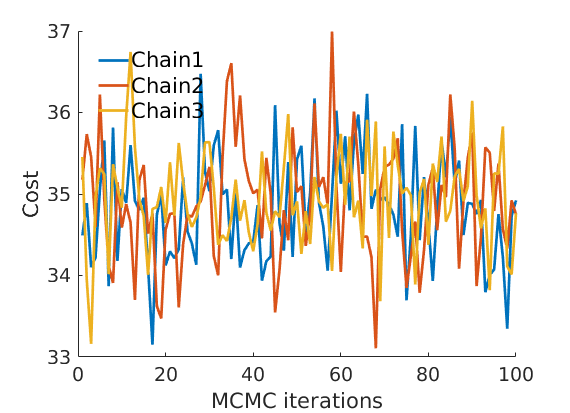
% Plot traces and histograms variables = {'logalpha2', 'sigma', 'Fparam.a', 'Fparam.b2', 'mean_w_rem'}; namesvar = {'$\log \tilde\alpha$', '$\sigma$', '$a$', '$\tilde b$', '$\overline{w}_{\ast}$'}; trueval = {log(alpha_true)+sigma_true*log(tau_true), sigma_true,Fdist_true.param.a, tau_true*Fdist_true.param.b, mean(w_rem_true)}; plot_trace(objmcmc_all.samples, objmcmc_all.settings, variables, namesvar, trueval, outpath, prefix, suffix); plot_hist(objmcmc.samples, variables, namesvar, trueval, ind_features, [], outpath, prefix, suffix);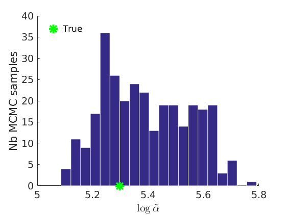 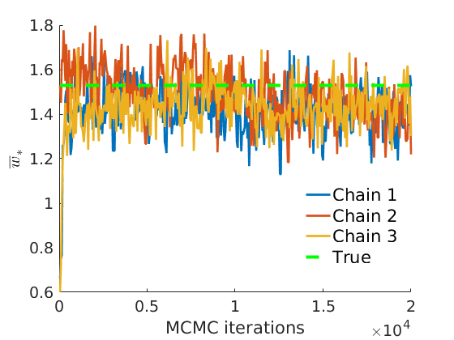 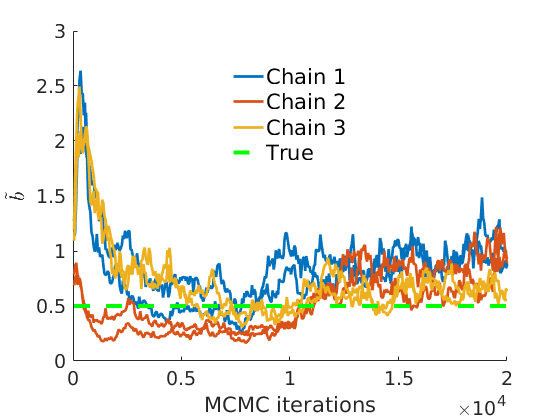 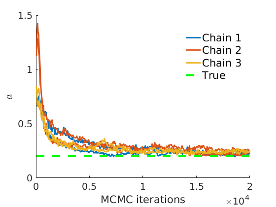 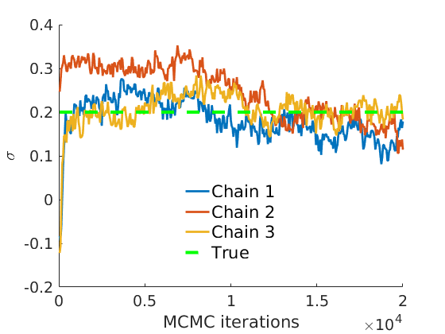 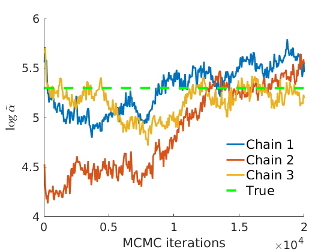 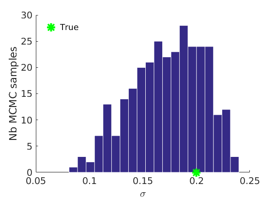 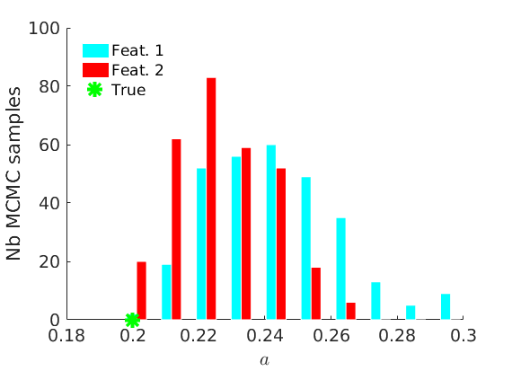 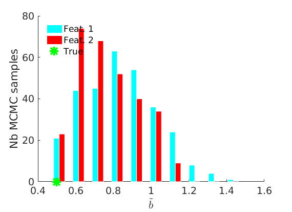 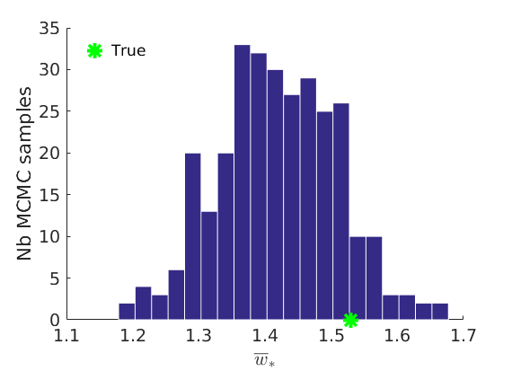
% Plot the graph by sorting the nodes by max feature [~,indk] = max(w_true,[],2); [~,ind] = sort(indk, 'descend'); figure spy(G(ind, ind)) xlabel('Nodes') ylabel('Nodes') title('Sorted Adjacency Matrix')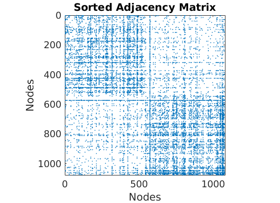
% Plot posterior predictive of degrees if istest ndraws = 100; else ndraws = 5000; end plot_degreepostpred(G, objmcmc, ndraws, 1e-6, outpath, prefix, suffix);
----------------------------------- Start degree posterior predictive estimation: 100 draws Estimated end of computation: 08-Nov-2017 18:10:48 (0.0 hours) |---------------------------------| |*********************************| End degree posterior predictive (0.0 hours) -----------------------------------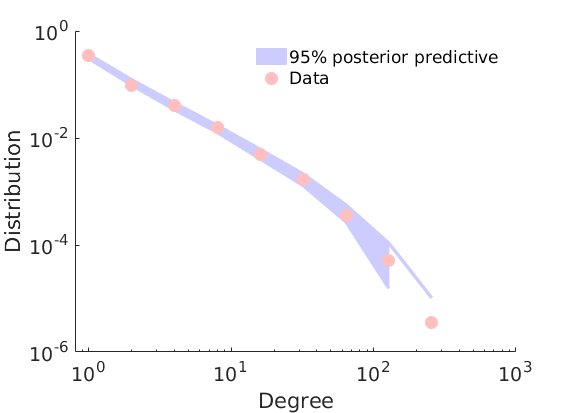
% Plot credible intervals for the weights [~, ind] = sort(sum(G, 2)+sum(G, 1)', 'descend'); mean_w_true = mean(w_true,2); % High degree nodes figure('name','Credible intervals - high degree nodes'); hold on for i=1:min(nnodes(1), 50) plot([i, i],quantile(objmcmc.samples(1).mean_w(ind(i), :, :),[.025,.975]), 'r','linewidth', 3); hold on plot(i, mean_w_true(ind(i)), 'xg', 'linewidth', 2) end xlim([0.1, min(nnodes(1), 50)+.5]) box off ylabel('Mean sociability parameters', 'fontsize', 16) xlabel('Index of node (sorted by dec. degree)', 'fontsize', 16) legend('95% credible intervals', 'True value', 'location', 'northeast') legend boxoff [~, ind] = sort(sum(G, 2)+sum(G, 1)', 'descend'); % Low degree nodes figure('name','Credible intervals - low degree nodes'); hold on for i=max(1,nnodes(1)-50+1):nnodes(1) plot([i, i],... quantile(log(objmcmc.samples(1).mean_w(ind(i), :, :)),[.025,.975]), 'r', ... 'linewidth', 3); hold on plot(i, log(mean_w_true(ind(i))), 'xg', 'linewidth', 2) end xlim([max(1,nnodes(1)-50+1)-.5, nnodes(1)+.5]) ylim([-12, -4]) box off ylabel('Log mean sociability parameters', 'fontsize', 16) xlabel('Index of node (sorted by dec. degree)', 'fontsize', 16) legend('95% credible intervals', 'True value', 'location', 'southeast') legend boxoff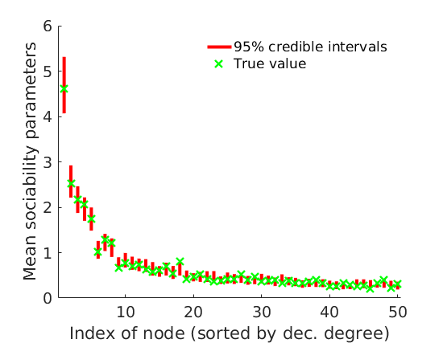 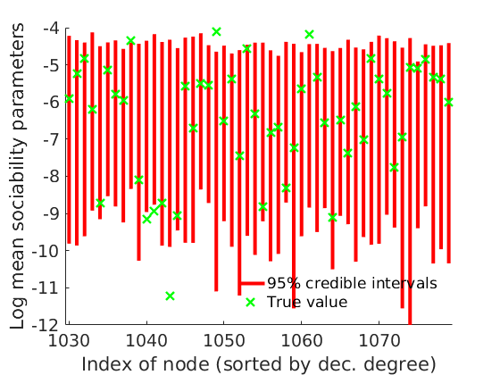